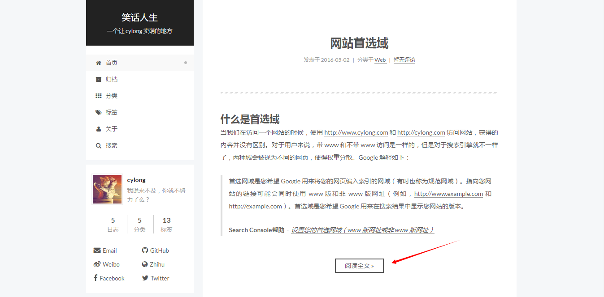
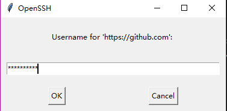

前言
Hexo 是一个非常简洁的静态博客框架，可以快速的搭建生成自己的博客，但是在使用中总会遇到各种各样奇怪的错误，在这里我整理一下我所遇到的错误和一些使用技巧等等，也欢迎各位读者对使用技巧和使用问题进行补充。如果有什么问题也可以随时在下方提问。
注意：
_config.yml文件在项目下有两个，一个在主题目录下，一个在博客根目录下。我在文中会说明是哪个文件。- 本博客使用的是 Next 主题，某些设置可能与主题有关。
让 Hexo 不渲染 .md 或者 .html
我们知道，在 source 文件夹下的所有 md 文件或者 html 文件都会被渲染，有时候我们不想这些文件被渲染怎么办？比如很多时候我们想要写一个 README.md 或者一些自定义的页面。比如百度或者谷歌在验证站长权限的时候，通常都会要求在主目录下添加一个 html 文件。
不渲染 html 文件
在不想被渲染的 html 文件最上面添加如下代码
1 | --- |
不渲染 md 文件
使用上面的办法虽然不会渲染 md 文件，但是还是将 md 文件转化成了 html 文件，如果想保留原 md 文件后缀要怎么做呢？这就需要在 站点配置文件 _config.yml 中配置，找到 skip_render 参数，开始匹配的位置是基于你的 source_dir 的，一般来说，是你的 source 文件夹下。下面我分别列举几种常见的情况进行说明：
skip_render: test/*单个文件夹下全部文件skip_render: test/*.md单个文件夹下指定类型文件skip_render: test/**单个文件夹下全部文件以及子目录- 多个文件夹以及各种复杂情况：
1
2
3skip_render:
- `test1/*.html`
- `test2/**`
首页文章显示查看原文按钮
我们常常想在首页只显示文章的概述，而不是文章的全部，用一个 阅读全文 的字样代替，要怎么做呢？如下图：

在文章中只要写成如下格式即可：
1 | 这是摘要 |
需要注意的是，点击 阅读全文 之后，文章会自动定位到 <!-- more --> 所在位置，想要修改成从头阅读需要修改主题配置文件 _config.yml 文件：
1 | # Automatically scroll page to section which is under <!-- more --> mark. |
部署到 Github 后，部分修改未更新
有时候当你 hexo d --g 部署到 Github 的时候，发现有些地方并没有更新，比如你的主题样式。这时候就建议你输入 hexo clean 清除下 public 文件夹下的文件，然后再部署【部署的时候实际上是直接拷贝 public 下的文件的】。另外多说一句，hexo d --g 是以下两个命令的缩写：
1 | hexo g # 生成本地 public 静态文件 |
Hexo 使用 Fort Awesome 图标
我们知道，在我们写博客的时候，博客文件，或者自己自定义的页面，比如关于页面，都是 md 文件。最后会转化成 Html 文件。但是所支持的标签还是没有 Html 的全面，不过我们可以直接在 md 文件中写 Html 标签，比如：
1 | <del>你什么都没有看见</del> |
当然，你可以直接使用 Fort Awesome 图标，下面是我在 关于 页面写的代码：
1 | # 联系我 |
配置 SSH 公钥免去部署的时候输入密码
1 | # Deployment |
上面的代码是 _config.yml 中部署的代码，分别是部署到 Github 和 Coding 上的两种方式，使用 HTTPS 方式的话每次部署都需要输入用户名和密码，很麻烦。

所以我选择使用 SSH 的方式，此方式是本机与远程仓库建立对接，这样部署的时候就不需要输入用户名和密码了。但是需要以下的配置：
打开终端或者 Git Bash，依次输入：1
2
3
4
5
6
7
8
9
10
11
12
13mkdir ~/.ssh # 如果之前没有这个文件夹就创建此文件夹
cd ~/.ssh # 进入到 .ssh 文件夹中
ssh-keygen -t rsa -C "youremail@example.com" # 生成密钥
# 接着会提示输入 file 和 passphrase，直接回车就行。
# 接着会看到下面的输出：
Your identification has been saved in /home/cylong/.ssh/id_rsa.
Your public key has been saved in /home/cylong/.ssh/id_rsa.pub.
The key fingerprint is:
fd:56:db:23:db:bf:df:54:0a:6a:43:51:13:34:22:b6 youremail@example.com
# 接着输入
ssh-add ~/.ssh/id_rsa
然后打开 https://github.com/settings/ssh【Github】，点击 New SSH key，复制 id_rsa.pub 中的所有内容到 Key 框中，在 Title 框中输入方便自己记忆的名字【比如我的是 Personal Ubuntu】。https://coding.net/user/account/setting/keys【Coding】也一样，但是需要注意的是注册邮箱要一样，否则要两个 SSH。最后输入 ssh -T git@github.com 和 ssh -T git@git.coding.net 测试是否配置成功。
Ubuntu 下使用 Hexo
辗转反侧，还是忍不住使用 Ubuntu 系统。而且基本所有的人都和我说以后的开发都要使用 Linux 系统。所以最近准备使用 Ubuntu 练手，当然，博客也要在 Ubuntu 上更新了。由于我的博客已经在 Windows 系统下搭建好了，教程参考 Hexo + Git 搭建免费的个人博客 | 笑话人生 【虽然是 Windows 下的教程，但是其他平台步骤都是一样的】。Hexo 源码放在 Github - HexoBlog 上。所以直接 clone 下来就好。下面就说说我在 Ubuntu 系统下遇到的问题。
在执行 npm 命令时出现以下错误：
1
2
3
4sh: 1: node: not found
npm WARN This failure might be due to the use of legacy binary "node"
npm WARN For further explanations, please read
/usr/share/doc/nodejs/README.Debian解决办法，执行以下命令：
1
sudo apt-get install nodejs-legacy
详情请参考：
http://stackoverflow.com/questions/20057790/what-are-the-differences-between-node-js-and-node
执行 hexo 命令时出现以下错误：
1
FATAL Cannot find module '/home/cylong/Github/HexoBlog/node_modules/hexo-deployer-git'
原因是没有 hexo-deployer-git module。执行以下命令安装：
1
npm install hexo-deployer-git
可以正常执行 hexo 命令，但是会出现下面的警告：
1
2
3
4Native thread-sleep not available.
This will result in much slower performance, but it will still work.
You should re-install spawn-sync or upgrade to the lastest version of node if possible.
Check /usr/local/lib/node_modules/hexo-cli/node_modules/hexo-util/node_modules/cross-spawn/node_modules/spawn-sync/error.log for more details解决办法如上警告所说，升级 node.js。
1
2
3sudo npm cache clean -f
sudo npm install -g n
sudo n stable详情请参考：
http://stackoverflow.com/questions/8191459/how-to-update-node-js
执行
hexo g无法部署到 Github 上，出现如下错误：1
2
3
4
5
6
7
8
9
10
11Permission denied (publickey).
fatal: Could not read from remote repository.
Please make sure you have the correct access rights
and the repository exists.
FATAL Something's wrong. Maybe you can find the solution here: http://hexo.io/docs/troubleshooting.html
Error: Permission denied (publickey).
fatal: Could not read from remote repository.
Please make sure you have the correct access rights
and the repository exists.解决办法，请参考：
添加 RSS 订阅
安装 Feed 插件
1
npm install hexo-generator-feed --save
配置站点目录下的
_config.yml文件，添加如下代码：1
2
3
4
5feed:
type: atom
path: atom.xml
limit: 20
hub:
- type - 订阅类型 (atom 或 rss2)
- path - 路径 (默认: atom.xml 或 rss2.xml)
- limit - 最多显示文章数量 (0 或 false 展示所有文章)
- hub - PubSubHubbub hubs 的 URL (PubSubHubbub 是一个“开放的、服务器对服务器、基于Web-hook的发布/订阅协议，是 Atom 和 RSS 的扩展”。不使用就留空)
网站底部字数统计
安装 hexo-wordcount 插件
1
npm install hexo-wordcount --save
在
/themes/next/layout/_partials/footer.swig中最后加上:1
2
3
4<div class="theme-info">
<div class="powered-by"></div>
<span class="post-count">博客共{{ totalcount(site) }}字</span>
</div>
LF will be replaced
Windows 提交命令的时候出现 warning: LF will be replaced by CRLF in xxx 的警告。输入以下命令即可：
1 | git config --global core.autocrlf false |
感谢
Xuanwo’s Blog - Hexo常见问题解决方案
Xuanwo’s Blog - 使用Github SSH Key以免去Hexo部署时输入密码
动动手指，不限于NexT主题的Hexo优化（SEO篇） | ARAO’S BLOG
生生之境 提出的各种【高智商(●’◡’●)】问题
Hexo 博客补丁 - 萤火之森
使用 Hexo 搭建博客的深度优化与定制 - 唐小筑
hexo同时托管到coding.net与github - shomy
参考资料
Hexo + Git 搭建免费的个人博客 | 笑话人生
Hexo 中文文档 【包涵：文档、API、插件、主题】
Next 使用文档 【包含：开始使用、主题配置、第三方服务、内建标签、常见问题】
Feed generator for Hexo
hexo-wordcount
文章标题：Hexo 使用总结 & 常见问题
文章作者：cylong
文章链接：http://www.cylong.com/blog/2016/04/25/hexo-faq/
有问题或者建议欢迎在下方评论。欢迎转载、引用，但希望标明出处，感激不尽(●’◡’●)